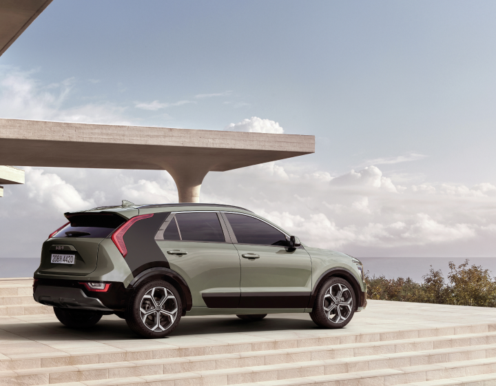
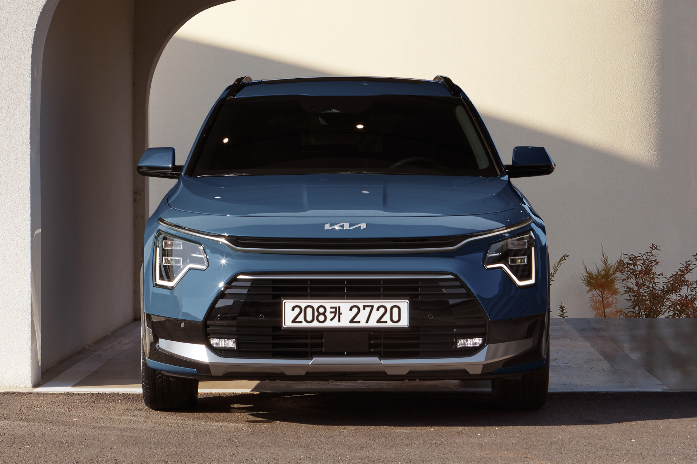

첫번째 트림을 선택해야해요!

기아 니로는
100가지가 넘는
다양한 옵션들이 있어요!
기아가 추천하는 옵션을
‘트림’으로 묶어 놨죠
다양한 옵션들이 있어요!
기아가 추천하는 옵션을
‘트림’으로 묶어 놨죠


니로는
트렌디
프레스티지
시그니처
총 세가지의 트림이 있어요.
‘트림’ 등급이 높아질 수록
기본적으로 포함되는 옵션이 많아지고,
추가 선택할 수 있는 옵션이 다양해져요 😙
기본적으로 포함되는 옵션이 많아지고,
추가 선택할 수 있는 옵션이 다양해져요 😙

시그니처는 프레스티지의
모든 기본 옵션을 갖고 있고,
모든 기본 옵션을 갖고 있고,
프레스티지는 트렌디의
모든 기본 옵션을 갖고 있죠!
모든 기본 옵션을 갖고 있죠!
그럼 트림 별로 어떤 옵션들이
있는지 알아볼까요?
트림 선택하기
있는지 알아볼까요?